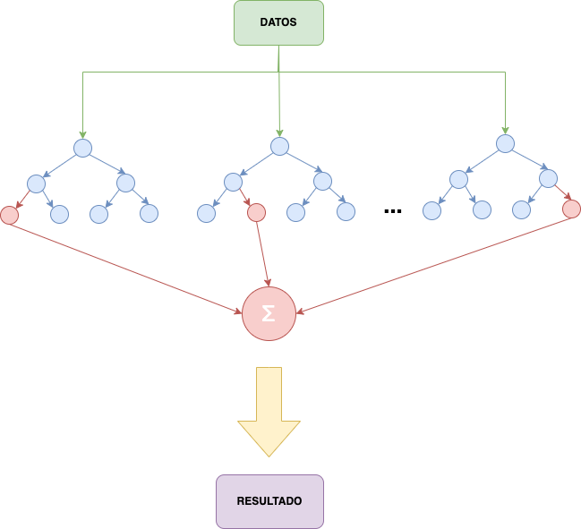

Random forest#
El Random Forest es un poderoso algoritmo de aprendizaje supervisado utilizado tanto para clasificación como para regresión en problemas de machine learning. Este método pertenece a la categoría de “ensemble learning”, que implica combinar las predicciones de múltiples modelos para mejorar la precisión y la robustez del modelo global. La idea fundamental detrás de Random Forest es la construcción de un conjunto diverso de árboles de decisión.
En Random Forest, se generan varios árboles de decisión durante el entrenamiento, y cada uno de estos árboles se entrena con diferentes subconjuntos aleatorios del conjunto de datos. Además, en cada nodo de un árbol, se realiza una selección aleatoria de un subconjunto de características para dividir los datos. Esta variabilidad en la construcción de árboles y la selección aleatoria de características ayuda a reducir el sobreajuste y mejora la generalización del modelo.
Cuando se realiza una predicción con Random Forest, se obtienen las predicciones de todos los árboles y se promedian (en el caso de regresión) o se realiza una votación (en el caso de clasificación) para determinar la predicción final. Esta técnica de promediar o votar ayuda a suavizar las decisiones individuales de cada árbol, lo que resulta en un modelo más robusto y resistente al ruido en los datos.
Random Forest también es conocido por su capacidad para manejar conjuntos de datos grandes con muchas características, ya que puede manejar automáticamente la importancia relativa de las variables, proporcionando una visión general de qué características son más influyentes en la predicción. Además, este algoritmo es eficiente computacionalmente y paralelizable, lo que lo hace adecuado para problemas en los que se requiere procesamiento rápido de grandes cantidades de datos.
Entrenar un Random Forest#
Vamos a ver como entrenar un Random Forest para nuestro problema de los seguros:
from regression import calculate_error, get_train_test_validation
from sklearn.ensemble import RandomForestRegressor
X_train, X_test, X_val, y_train, y_test, y_val = get_train_test_validation()
reg = RandomForestRegressor()
reg.fit(X_train, y_train)
y_pred = reg.predict(X_val)
calculate_error(y_pred, y_val)
---------------------------------------------------------------------------
UnboundLocalError Traceback (most recent call last)
Cell In[2], line 4
1 from regression import calculate_error, get_train_test_validation
2 from sklearn.ensemble import RandomForestRegressor
----> 4 X_train, X_test, X_val, y_train, y_test, y_val = get_train_test_validation()
7 reg = RandomForestRegressor()
8 reg.fit(X_train, y_train)
File /mnt/Datos/proyectos/Especialidad BigDataIA/repositorios/sistemas_aprendizaje_automatico/apuntes_web/markdowns/sistemas_supervisados/regresion/modelos/../../../../code/regression.py:35, in get_train_test_validation(path)
33 def get_train_test_validation(path=None):
---> 35 X, y = get_X_y(path)
37 X_train, X_test, y_train, y_test = train_test_split(X, y, test_size=0.2, random_state=1)
38 X_train, X_val, y_train, y_val = train_test_split(X_train, y_train, test_size=0.25, random_state=1)
File /mnt/Datos/proyectos/Especialidad BigDataIA/repositorios/sistemas_aprendizaje_automatico/apuntes_web/markdowns/sistemas_supervisados/regresion/modelos/../../../../code/regression.py:15, in get_X_y(path)
13 if path:
14 PATH_TO_CSV = path
---> 15 df = pd.read_csv(PATH_TO_CSV + 'insurance_preprocesed.csv')
16 df = df.drop(['No'], axis=1)
17 X = df.copy().drop(['charges'], axis=1)
UnboundLocalError: cannot access local variable 'PATH_TO_CSV' where it is not associated with a value
Una vez ejecutado el código, podemos observar que sin haber configurado ningún hiperparámetro, ya obtenemos una puntuación parecida a un árbol de decisión. Con esto queda patente que la combinación de modelos es una herramienta muy potente para la predicción de valores.
Hiperparámetros de los Random Forest#
Vamos a mostrar algúnos de los hiperparámetros más importantes del Random Forest:
| HIPERPARÁMETROS DE LOS RANDOM FOREST | |||
|---|---|---|---|
| n_estimators | Este parámetro determina el número de árboles en el bosque. Un mayor número de árboles generalmente mejora el rendimiento del modelo, pero también aumenta el costo computacional. | ||
| criterion | Especifica la función para medir la calidad de una división. Puede ser "gini" para la impureza de Gini o "entropy" para la ganancia de información. La elección depende de la naturaleza del problema y las preferencias del usuario. | ||
| max_depth | Controla la profundidad máxima de cada árbol en el bosque. Limitar la profundidad ayuda a prevenir el sobreajuste, pero también puede llevar a un modelo subajustado. | min_samples_split | Establece el número mínimo de muestras requeridas para realizar una división en un nodo interno. Un valor más alto evita divisiones que generan nodos con muy pocas muestras. | min_samples_leaf | Especifica el número mínimo de muestras requeridas para ser una hoja (nodo terminal). Ayuda a controlar el tamaño de las hojas y evita particiones con muy pocas muestras. | max_features | Controla el número máximo de características a considerar para hacer una división en cada nodo. Puede ser un número entero, un porcentaje o "auto" para considerar todas las características. | bootstrap | Indica si se debe realizar el muestreo con reemplazo al construir árboles. Si es True, se realiza el muestreo con reemplazo (bootstrap), y si es False, se utiliza el conjunto de datos completo. | random_state | Semilla para la generación de números aleatorios. Proporciona reproducibilidad, ya que fija la secuencia de números aleatorios utilizada en el proceso de construcción de árboles. |
Alguno de estos parámetros ya lo hemos visto en los árboles de decisión, por lo que es muy fácil entender que podemos hacer con ellos.
Siguiendo con el ejemplo, vamos a configurar el Random Forest con los parámetros que utilizamos en los árboles de decisión.
reg = RandomForestRegressor(max_depth=4,
min_samples_leaf=10,
min_samples_split=10,
max_features=10,
criterion="squared_error",
max_leaf_nodes=4)
reg.fit(X_train, y_train)
y_pred = reg.predict(X_val)
calculate_error(y_val, y_pred)
Vamos a comparar los resultados obtenidos a ver que tal:
| MÉTRICAS DE EVALUACIÓN DE LOS MODELOS DE REGRESIÓN | |||
|---|---|---|---|
| MÉTRICA | ÁRBOLES DE DECISIÓN | RANDOM FOREST | |
| RMSE | 6308.49 | 6135.73 | |
| R² | 0.71 | 0.73 | |
| MAPE | 0.85 | 0.67 | |
Vaya, parece que algo hemos mejorado, ¡esto pinta bien!